Activité Musculaire (Muscle Squelettique)
L’ensemble des muscles squelettiques constituent 30 à 40% de la masse totale du corps humaine. Les tendons de ses muscles sont fixés avec les os.
Les muscles squelettiques (muscle rouge ou strié) sont formés par
+ Deux tendons.
+ Une ventre.
Chaque muscle est formé par des fibres musculaires striés.
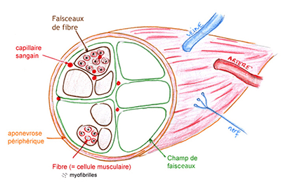
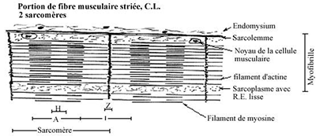
A - Structure microscopique d’une fibre musculaire :
La fibre musculaire strié est une cellule géante, sous le microscope optique elle renferme des noyaux entourés par un membrane plasmique (Sarcolème) et un cytoplasme (Sarcoplasme) et des vaisseaux fibrilles (Myofibrille) dont chacun renferme des disques sombres et disques clairs.
Le microscope électrique montre que chaque disque sombre renferme des myofilament (Actine et Myosine) aussi que chaque disque clair renferme seulement des Actines.
Chaque disque sombre est partagé par une bande clair et appelé Bande H, chaque disque clair est coupé à son milieu par un trait appelé Strie Z. L’unité contractile ou sarcomère est la portion de la fibre comprise entre deux strie Z consécutive.
Sarcomère comprend deux demi-disques clair séparé par un disque sombre. Le sarcomère est l’unité fonctionnelle du muscle lorsqu’il se contracte le sarcomère présente un aspect contracté. Il y’a raccourcissement des disques clairs et de la Bande H, alors que les disque sombres dardent leurs longueurs.
Cette contraction musculaire est due à un glissement de molécule de myosine et actine.
Dans le sarcomère il existe la mitochondrie et une grande quantité de glycogène et un réticulum endoplasmique développer qu’à la propriété d’accumuler une grande quantité de Ca2+.
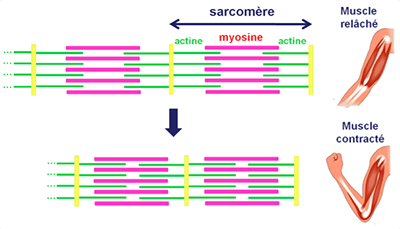
- comparaison entre sarcomère (relâché et contracté)
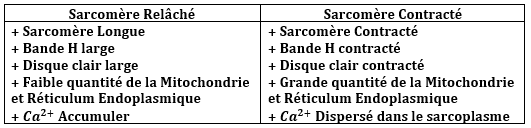
+ Synapse neuro-musculaire :
a - Plaque motrice (Innervation motrice) : c’est la zone de contact entre une arborisation terminale d’un neurone moteur et une fibre musculaire.
- Unité motrice : est l’ensemble de fibre musculaire innervé par même fibre nerveuse.
- Mécanisme de la transmission synaptique : l’arrivé d’un potentiel d’action à la terminaison axonique provoque l’entré de Ca2+ et l’exocytose de vésicule synaptique et la libération de l’ACT dans la fente synaptique, fixation de l’ACT sur la récepteur spécifique de la membrane post-synaptique et l’ouverture des canaux ionique et la modification de la perméabilité membranaire de Na+ et K+ et la dépolarisation de la membrane de la fibre musculaire et naissance d’un potentiel d’action musculaire (PAM).
L’hydrolyse de l’ACT grâce a une enzyme spécifique Acétylcholistrase le potentiel d’action se propage le long de la fibre musculaire ce qui provoque la libération de Ca2+ du réticulum endoplasmique et fixation d’actine et myosine et l’hydrolyse de l’ATP et glissement d’actine et myosine (contraction musculaire).
b - Innervation sensitif (Fuseau neuro-musculaire FNM) : sont des récepteurs sensoriels très sensible sur l’attirement et sont des mécanaux récepteurs.
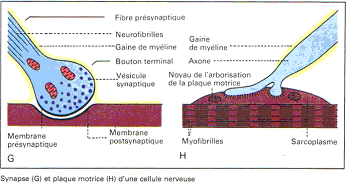
+ Les enregistrement musculaires : l’appareil d’enregistrement musculaire est appelé Myographe et l’enregistrement obtenue est dite Myogramme.
a - Réponse musculaire a une seul excitation (secousse musculaire isolée) : si on excite le muscle par une stimulation efficace le muscle se contracte puis se relâche et répond par une secousse musculaire dont le myogramme montre trois phases :
- Temps de latence (temps perdue) : dure environ 10ms, cette phase est comprise entre le moment d’excitation et le début de la réponse.
- Phase de contraction (Raccourcissement) : c’est la période active du muscle et dure 50ms.
- Phase de relâchement (Décontraction) : dure environ 30ms.
Remarque :
Le muscle à la loi de recrutement.
La période réfractaire du muscle est le temps de latence.
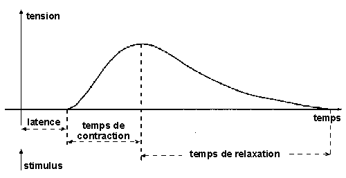
b - Réponse musculaire à deux stimulations : quand le muscle subie deux excitations successives, la réponse est différente selon le moment ou intervienne la 2éme excitation mais également en fonction de l’intensité utilisé.
- Si la seconde excitation intervienne au moment de relâchement on obtient de secousse musculaire de fusion incomplète.
- Si cette excitation est appliquée au cours du contraction ou observe deux secousses de fusion complète.
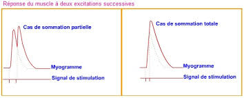
c - Réponse musculaire a plusieurs excitations (Tétanos Musculaires) :
- Tétanos Parfait : chaque 2éme St. Intervienne au cours de contraction.
- Tétanos Imparfait : chaque 2éme St. Intervienne au moment de relâchement.
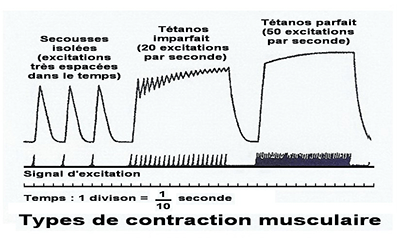
d - Fatigue Musculaire : Après une activité prolongé d’un muscle (secousse répété ou tétanos successives) on remarque une diminution de l’amplitude et augmentation de durée de la secousse musculaire.
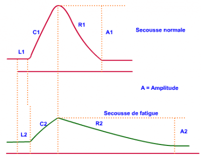
+ Les Aspects de la contraction musculaire :
1 - Aspect électrique : chaque muscle est polarisé et grâce a un oscilloscope a doublé voies on peut enregistrer les aspects de la contraction musculaires.
- la voie 1 : permet d’enregistré les phénomènes électriques du muscle (PA).
- la voie 2 : permet d’enregistré les phénomènes mécaniques du muscle (secousse musculaire).
La contraction musculaire est procédée par un PA localisé dans le temps de latence de la secousse musculaire, on déduit que le phénomène électrique provoque et procède le phénomène mécanique.
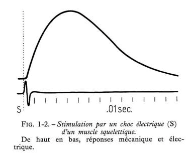
2 - Aspect Thermique : de la contraction musculaire, le schéma ci-contre présente un schéma expérimental qui permet d’enregistré le dégagement de la chaleur lors d’une contraction musculaire une thermophile comprend deux aiguille chermo-éléctrqie chacune formé par deux métaux différente (Ni, Cu2+), l’une des aiguilles est introduite dans le muscle, l’autre est maintenue à une température de référence.
Lorsque le muscle se contracte une différence de température entre les aiguilles est enregistré, un courant électrique dont l’intensité est proportionnelle à la température du muscle.
Les courbes représentent les résultats obtenus :
+ chaleur initiale
+ chaleur retardée
Remarque
A l’absence de l’oxygène on constate la disparition des chaleurs retardé
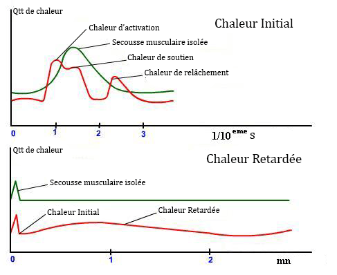
3 - Aspect Chimique :
Le tableau ci-dessous résume les mesures réaliser au niveau d’un muscle au repos et en activité avec les réactions chimique des sources énergétiques musculaires.
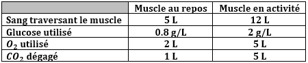
(C6H10O6)n + nH2O ------> nC6H12O6
Glycogène + eau ------> Glucose
Donc la source d’énergie musculaire est le glucose en présence de O2
C6H12 + 6O2 ----> 6CO2 + H2O + ATP
- Source énergétique musculaire et férmentation de glucose :
C6H12O6 -----> 2CH3-CH(OH)-COOH + ATP
- Source énergétique musculaire et l'Hydrolyse de l'ATP :
ATP + H2O --A+M---Ca2+--> ADP + H3PO4 + E
- Source énergétique musculaire et est ACP :
ACP + ADP -----> ATP + AC + E
- Regénerescence de l'ATP (Lente) :
C6H12 + 6O2 ----> 6CO2 + H2O + ATP
C6H12O6 -----> 2CH3-CH(OH)-COOH + ATP
- Regénerescence de l'ATP (Rapide) :
AMP + ADP -----> ATP
2ADP -----> ATP + AMP
ACP + ADP -----> ATP + AC (Créatine)
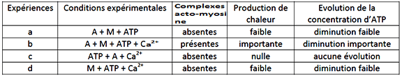